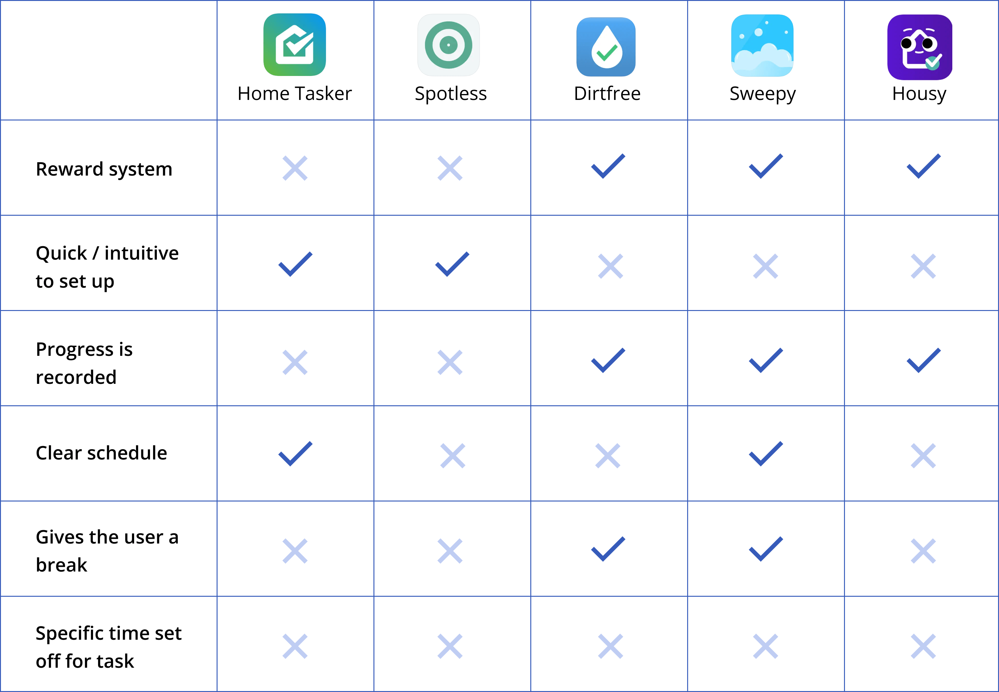

Team
Solo Project
My Role
UX Researcher
UX / UI Designer
Tools
Figma
Photoshop
Illustrator
Timeline
4 weeks (Summer 2022)
OVERVIEW
Concept
I did this project as a passion project over a span of 4 weeks during Summer 2022. The purpose of the project was to develop a cleaning app that would help individuals build cleaning habits and to further develop my UX / UI skills.
Problem
A major problem many individuals face when cleaning their house is building a habit out of it, lacking motivation, and letting all of their chores pile up, resulting in the need for marathon cleaning.
Solution
An app that utilises timed cleaning, progress recording and gamification, where users are able to reward themselves for consistently accomplishing their cleaning tasks.

Create Schedules
• Choose the area and task.
• Choose a time and how long you will clean for.
• Repeat the task however many times you need.
Reward Yourself
• Choose what you will reward yourself with once you reach milestones.
• Level up and reward yourself at 25XP, 50XP, 75XP and 100XP milestones!
Complete Tasks & Gain Points
• Start the timer and clean.
• Take before and after pictures to view your progress.
• Receive points when the timer is up

Record Progress
• Record your progress with before and after pictures.
• Look back at your progress for motivation.
DESIGN PROCESS
Design Thinking Framework
I followed the Design Thinking framework to better understand the problem and the challenges users may be facing. My process was not linear and I revisited the stages throughout the process.

EMPATHIZE
Secondary Research
I conducted secondary research and discovered several insights:
1. Individuals avoid cleaning because of the lack of time.
2. After cleaning, individuals feel satisfied and like to admire their work.
3. Individuals are more likely to successfully stick to a habit when the task is planned and progress is recorded.
User Interviews
I conducted several interviews to better understand my users and what discourages / motivates them.
Interview Questions:
1. Tell me about the last time that you successfully built a habit. How did you motivate yourself, and what difficulties did you face?
2. How often do you clean?
3. What motivates you to start cleaning?
4. When do you prefer to clean and why?
5. Tell me about the last time you cleaned, how did you feel before, during, and after?
6. Tell me about the last time you tried to make a habit of cleaning regularly? What were your motivations? What difficulties did you face?
Data Clustering in Figma
To better help me organise the data from the interviews and identify major themes I created an affinity map in Figma.

Four major insights:
1. Individuals prefer daily light cleaning over marathon cleaning.
2. Individuals succeed in cleaning/building habits when the task is scheduled.
3. Individuals are more likely to achieve habits when there is a reward.
4. Individuals are more likely to stick to a habit when they get breaks.
COMPETITIVE ANALYSIS
No Specific Scheduled Time
After analysing five different cleaning apps, I noticed that none of them had a specific time set off for the user to clean.
DESIGN
Major Insights → Design Opportunities
I looked at the major insights I came across in the empathize/discover stage and translated them into possible design opportunities that could be implemented within the app.
1. Let users create customizable cleaning schedules with quick cleaning sessions.
2. Reward users for sticking to their cleaning schedule.
3. Help users record their progress to further motivate them.
WIREFRAMES
Exploring the Layout
I created wireframes for the onboarding portion of the app, main app pages and task completion. I also created a prototype out of the wireframes for the users to use in the testing stage.

TESTING
Major Improvements
After collecting user feedback, I went back and adjusted the wireframes based on the main issues that the users had with the app.

Clearer Onboarding
• Users were confused on how to initially add a task to their schedule and the steps involved.
• Upon feedback, I enclosed the steps for adding the task in a box to increase clarity.

Navigation Icon Change
• The users were confused as to what the navigation icons represented and had difficulty navigating between pages.
• Upon feedback, I changed the icons and added labels to them to avoid confusion.

Clearer Progress Bar
• With the original reward bar, users were confused what it was and how points were collected
• Upon feedback, I used a more generic and recognizable progress bar and included labelled XP points.
STYLEGUIDE
Cohesive Design
Once I was satisfied with the wireframes. I created a style guide for the app. With the visual design, I wanted to convey freshness and cleanliness. To do that I used simple shapes and made use of the colour green.

MOCKUPS
Final Design
Onboarding
.png)
Initial Setup

App Main Pages
Task Completion
REFLECTION
Takeaways
Focused on data collection/organisation techniques. Using an affinity map to organise the data from the interviews helped me greatly in connecting the data and recognizing major themes. I found it to be a great tool that I will definitely be using in future projects.
Became familiar with Figma prototyping. This was my first time prototyping in Figma. It was definitely a challenge to learn but I found it to be a great tool to use when testing the app and collecting user feedback.
Project Management. Since this was a solo project solely dedicated to expanding my portfolio and developing my UI / UX skills I found it was very important to create a clear schedule for myself to keep myself on track.
Next Steps
Collect and implement user feedback for the mockups. I did not get a chance to collect any feedback on the final mockups. This would definitely be my next step as improvements and the visual design that is present in the mockups creates a whole different experience for the user and is crucial to test.